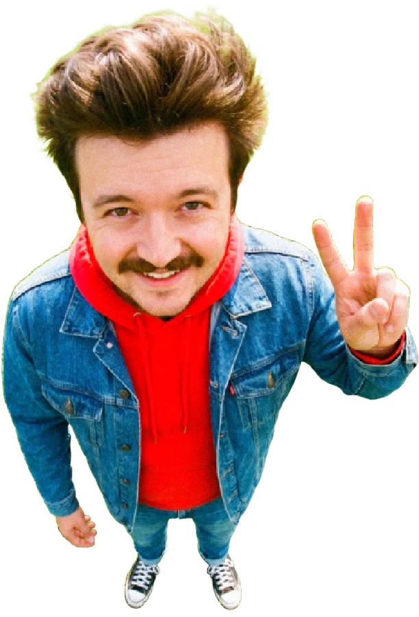
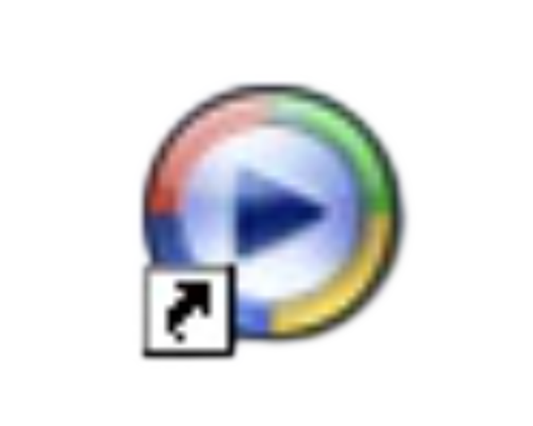
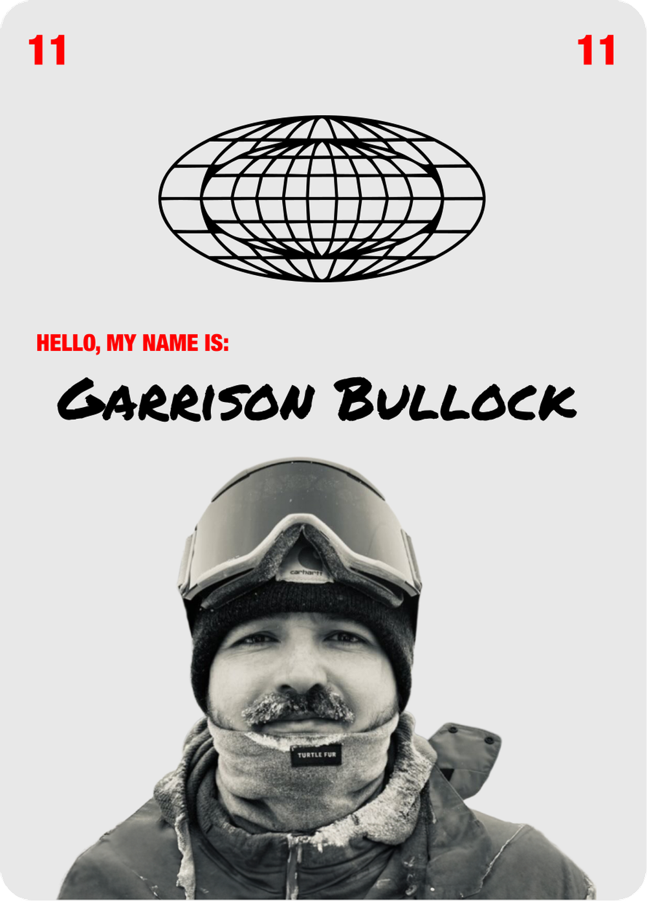

◉ GARRISON OS
File
Edit
View
Special

gleep zip zlorp

Windows Media
Player
Windows Media Player
_
□
✕
File
View
Play
Tools
Help
Ambience: Energy
click to change visualization
Ready
00:00 / 00:00
Boards of Canada — Roygbiv
✕

grab the card · click outside to close